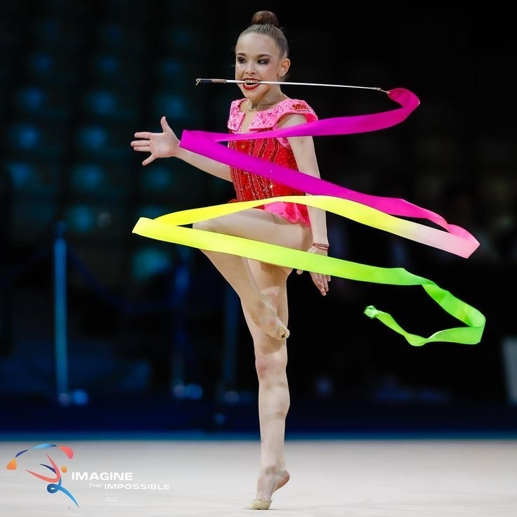

Regras
Aparelhos
Na ginástica rítmica, cada aparelho exige habilidades específicas. Conheça os principais aparelhos utilizados nas competições:
- Mãos Livres: Coreografia sem aparelho, consiste na intrepertação da música e da realização das dificuldades corporais. A federação internacional de ginástica denominou os movimentos livre apenas paras as classes abaixo dos júniores, ou seja, até aos 12 anos. Assim, as ginastas aprendem a realizar os movimentos corporais com clareza e a ser expressivas, antes de ter de consiliar os movimentos com os aparelhos.
- Corda: A corda é um aparelho maleavel, que permite uma diversidade de movimentos. A federeção de ginástica escolheu 4 aparelhos paras as competições internacionais de seniores e juniores, e assim como o ML, a corda atualmente não faz parte das competições depois dos 12 anos
- Arco: O arco é um aparelho que permite fazer rotações em várias partes do corpo, rolamentos, passagens por dentro, etc. O tamanho do arco mede-se dependo de cada atleta, deve chegar até à anca da ginasta. Pode-se realizar lançamentos com os pés, assim como receções como passar pelo arco enquanto se faz uma roda. Este tipo de movimento, no qual o arco cai enquanto a ginasta passa por dentro, cria efeitos visuais impressionantes. Além disso, o arco permite combinações interessantes com rolamentos no corpo, saltos através dele e lançamentos variados.
- Bola: A bola é um aparelho que se destaca pelos rolamentos, mas também pelos ressaltos no corpo e no chão. Não é muito pesada, o que permite lançamentos interessantes, mas também não é tão leve que comprometa os rolamentos. Pode ser utilizada para receções complexas, como apanhar a bola enquanto se faz uma cambalhota ou seja uma receção sem mãos, fora do campo visual e em rotação.
- Fita: A fita é conhecida pela sua beleza, mas é também um dos aparelhos mais difíceis de controlar. Os critérios principais incluem a criação de espirais e serpentinas, que devem ser bem definidas e desenhar pelo menos quatro serpentinas/espirais para que a dificuldade conte. A fita requer muita precisão para evitar que se enrole ou toque no corpo, e a sua manipulação é influenciada por fatores externos como a humidade e a temperatura. O “boomerang” é um elemento obrigatório, onde a fita é lançada e deve retornar sem tocar no chão.
- Maças: As maças são duas peças normalmente mais pesadas e permitem combinações muito interessantes. Por exemplo, é possível realizar a “cascata”, lançando uma maça enquanto a outra ainda está no ar. Também se pode lançar e receber uma maça usando a outra, usando o critério “sem mãos”.
Pontuação na Ginástica Rítmica
Na ginástica rítmica, a avaliação dos esquemas das ginastas é realizada por três júris distintos, cada um com um foco específico na performance:
Júri de Dificuldade:
Este júri avalia as dificuldades tanto corporais como de aparelho.
- Pivots: As famosas piruetas que podem ser realizadas em muitas posições diferentes.
- Saltos: Devem ser executados com boa elevação e forma.
- Equilíbrios: Posições que obrigam a ginasta a ficar momentaneamente estável, como a “bandeira” e o “avião” (chamado de prancha).
- Dificuldade de aparelho: Envolvem manuseios complexos do aparelho, como lançamentos, rolamentos, ressaltos, entre muitos outros dependem de casada aparelho.
- Riscos: São elementos em que o aparelho é lançado e a ginasta deve realizar pelo menos duas rotações, enquanto o aparelho está no ar, antes de o recebe.A pontuação dos riscos pode ser aumentada ao aumentar o número de rotações ou ao adicionar critérios especiais, como lançar fora do campo de visão, utilizar partes menos convencionais do corpo (como os pés), ou receber o aparelho de nas pernas, ou durante uma rotação (ex: roda), etc.
- Dois Passos de dança de 8s: São exigidos durante a performance que haja dois momentos de apenas dança que não incluam nenhuma dificuldade( ou seja que não ofereça pontuação extra).
